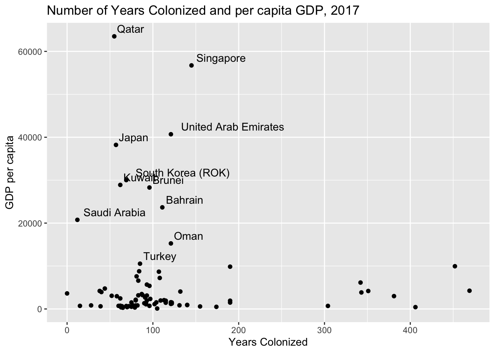
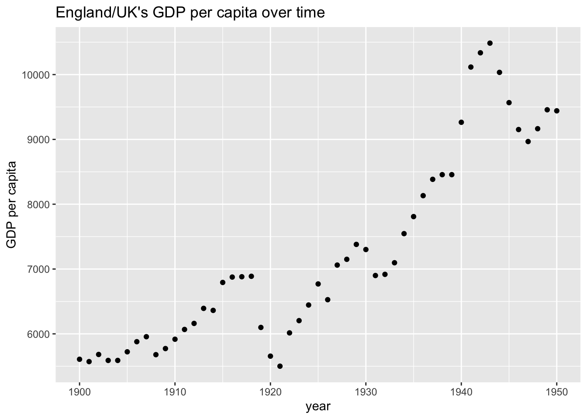

Chapter 5 Results
5.1 Indicators by Colonizing Country
###Get data
5.1.1 Average GDP, Gini Coefficient, and Human Development Index by Colonized Country

## [1] "Countries Colonized by Belgium"## Name
## 1 Burundi
## 2 Dem. Rep. Congo (Zaire; Congo-Kinshasa)
## 3 Rwanda## [1] "Countries Colonized by the Netherlands"## Name
## 1 Belgium
## 2 Indonesia
## 3 Luxembourg
## 4 SurinameThis graph shows that the average 2017 per capita gdp of countries that were never colonized is far greater than the average per capita GDP of countries that were colonized. The only group that comes close is the countries colonized by the Netherlands. The reason for this is likely that the Netherlands’ colonies include Belgium and Luxembourg, both of which have quite high per capita gdp’s currently. It’s likely that in order to understand this we would have to delve into the history of Netherlands, Belgium and Lexumbourg, when they were colonized, what that colonial relationship looked like and when they became independent. Interestingly enough when we look at the lower end of the graph, Belgium’s colonies (it was both colonized and a colonial power) have the lowest current GDP’s. It’s interesting to note that the Belgium has a reputation for being a particularly cruel colonial power.


It’s interesting to note that when comparing other average Gini coefficient and HDI not colonized countries are in the middle of the pack, rather than having the best outcome. Interstingly enough, it looks like countries colonized by Japan have the highest Human development index and those colonized by Austria-Hungary have the lowest gini coefficient, meaning the least inequality. A possibly interesting area of further analysis is looking at how these indicators change with time– there is a chance that they fluctuate more rapidly than GDP does and may be more strongly impacted by political factors such as the enstatement of universal healthcare. However, the many missing values have a serious effect on our ability to draw conclusions from this data.
## [1] "Countries Colonized by Austria Hungary"## State Name Code ColRulerName GDPpc17 HDI17
## 1 316 Czechia / Czech Republic CZE Austria-Hungary 20325.72 0.888
## 2 344 Croatia HRV Austria-Hungary 13176.53 0.831
## 3 317 Slovakia SVK Austria-Hungary 17552.06 0.855
## 4 349 Slovenia SVN Austria-Hungary 23296.41 0.896
## IHDI17 Gini ColRuler ColRulerCode IndFrom IndDate IndViol IndType
## 1 0.840 25.9 300 <NA> 315 199301 0 4
## 2 0.756 30.8 300 <NA> 345 199106 1 3
## 3 0.797 26.5 300 <NA> 315 199301 0 4
## 4 0.846 25.4 300 <NA> 345 199106 1 3
## SecFrom SecDate SecViol Into IntoDate COWsys GWsys
## 1 315 199301 0 -9 -9 199301 199301
## 2 345 199106 1 -9 -9 199201 199106
## 3 315 199301 0 -9 -9 199301 199301
## 4 345 199106 1 -9 -9 199201 199204
## Notes
## 1 Emerged from breakup of Czechoslovakia ("Velvet Divorce")
## 2 Polity2 codes earlier indep in 1830
## 3 Emerged from breakup of Czechoslovakia ("Velvet Divorce"); terr chg includes 1939 secession from Czechoslovakia under German rule (didn't enter system)
## 4 -9## [1] "Countries Colonized by Japan"## State Name Code ColRulerName GDPpc17 HDI17 IHDI17 Gini
## 1 732 South Korea (ROK) KOR Japan 30025.1957 0.903 0.773 31.6
## 2 731 North Korea (DPRK) PRK Japan 684.6008 NA NA NA
## ColRuler ColRulerCode IndFrom IndDate IndViol IndType SecFrom SecDate
## 1 740 JPN 730 194808 1 4 -9 -9
## 2 740 JPN 730 194809 1 4 -9 -9
## SecViol Into IntoDate COWsys GWsys
## 1 -9 -9 -9 194906 194808
## 2 -9 -9 -9 194809 194809
## Notes
## 1 Not coded as leaving unified Korea because 1945 Korea was Jap. protectorate
## 2 Not coded as leaving unified Korea because 1945 Korea was Jap. protectorateWhile we can see here that Austria-Hungary colonized Czech Republic, Croatia, Slovakia, and Slovenia, which all have similar relatively low Gini coefficients, and thus the average is representative of the circumstance of countries colonized by Austria-Hungary. When we look into Japan’s colonies, there is North Korea and South Korea, but information on both HDI17 and Gini coeffieicent only exists for South Korea, therefore the average is essentially the gini coefficient and HDI of South Korea. Clearly, this demonstrates an issues with the data – due to the many missing values, drawing conclusions from the averages may be tricky. And although a across time comparison would be fascinating, again the availability of the data is difficult. What seems to be fairly clear is that colonialism doesn’t appear to have an extremely strong impact on the current gini coefficient and HDI’s of countries. That isn’t to say that there is no impact, but there isn’t a strong enough one for it’s effect to be readily apparent from the limited data available. While the non economic impacts of colonialism remains an interesting question, the results of looking at these indicators are not strong enough for any commentary.
##GDP Over Time

It’s clear that England’s GDP increased drastically following the 1800s, but the reason for that is less clear. The 1800s was also the period of the industrial revolution, which had a huge impact in Europe and then the rest of the world. But it’s possible that the resources England was able to gain as a colonial power spurred the industrial revolution as well. That’s a question that needs historical analysis, in addition to data analysis. But it is clear that as England became a colonial power its GDP increased. There are however a few small drops that occur in the 1900s. Let’s look at the time period between 1900 and 1950 (post World War II all colonial countries gave up their colonies).

Unsurprisingly, it seems that large historical trends come out clearly in this data. There is a drop in GDP following World War I, the 30s – corresponding to the great depression, and post World War II. Of course it’s at this point that England lost all it’s colonies. It is however, worth noting that England’s ability to benefit from their colonies was likely decreasing for a longtime prior to this.
Let’s see if we can uncover anything about England’s GDP versus those of its colonies.

Even restricted to a narrower timeframe, there are too many countries to really interpret this graph. In fact, we can see that much information because at 1950, exactly after the end of colonialism. This makes comparing how a country fared before and after colonialism very difficult. So we’ll pull a few countries out based on what we have data for (these were determined from the missing values analysis).

Again the limitation of the data becomes apparent, although Sri Lanka had data extending farther back than many countries it still is fairly limited, understanding the impacts of colonialism overtime from data is clearly a problematic endeavour due to the lack of data available. And making any kind of statement as to trends is impossible since we have strong selection bias regarding what we looked at more closely – what data was available, which does not give us an accurate picture of the situation as a whole.
However, interesting observation is that the GDP of South Africa is greater than that of the UK until about 1800, which is around when South Africa became a colony of the UK. Prior to that South Africa was actually a colony of the Netherlands. Making any kind of statement based on this is clearly difficult, the UK’s GDP may have been increasing because of the colonization of other countries and the industrial revolution is likely a factor as well. And the reason that the UK was able to take control of South Africa from the Netherlands is another question. However the fact that we can see the GDP of South Africa decreasing at this time indicates it may be interest to compare the UK’s colonial policies regarding South Africa differed from those of the Netherlands. Or if perhaps it had anything to do with the demand of the kinds of goods/agriculture/etc South Africa supplied changing. Essentially this suggests an area of potential further historical analysis.
5.2 GDP by years colonized

We then looked at the relationship between the number of years a country was colonized for and their current per capita GDPs, the relationship didn’t seem strong. Most countries were colonized for less than 200 years, and all countries with higher current per capita GDPs fall in this range. All countries that were colonized for around 400 years have fairly low current per capita GDPs. It’s interesting to note that the countries that stand out for having higher current per capita GDPs all have noteable reasons for doing so. Qatar, Kuwait, Saudi Arabia, Oman, and Bahrain all have significant oil resources (in fact I believe Qatar has one of the highest per capia GDP in the world due to its oil reserves). Singapore and South Korea experienced rapid economic growth as countries among the “Asian Tigers” while post World War II Japan rose in economic strength as an industrial center. Essentially, it seems that of colonized countries those with higher per capita GDPs, the source/histories behind their current economic success is well known.
5.3 Indicators of Colonization
The multiple indicators Plotting a parcoords of all 20-something variable definitely fails into overplotting, so we displayed the ‘summary indicators’, Political/Economical/Social Transformation level, which have the benefit of 1) containing the general patterns of other variables 2) being already linearly scaled to 0-100 values. We plotted them against the gdp, as an (imperfect) metric of current performance of the country.
Overwhelmingly so, most countries are concentrated in the lower range of the GDPs. The three top-most (Japan, United Emirates, Qatar) countries in terms of GDPs also report lower-than average and median scores on colonization indicators. It is however good to have a critical viewpoint on this, as the three outliers have very specific colonial history that do not fall into the classic european domination framework as others.

This plot allows us to view the plight of countries by their relative colonizers, and identify the “worst offenders”. Netherlands and Portugal come in scoring higher overall than the UK and France, which came as a surprise to us, as we had those first in mind as countries with heavy colonial history. That can be justified by actually noticing that the UK and France both had a much wider colonial empire (see next graphs). As often in statistics, the greater range of countries tends to shrink the mean towards the middle, and as a boxplot shows us the range of the Colonial Transformation (overall summary indicator) is greater for France and the UK.


5.3.1 Correlations of variables (covariance matrixes)

Other than the obvious correlations between the different type of violences and their composite counterpart V Total, and the strong correlation between the Total Violence level and the Political Transformation Level (which comes as no surpris when examining that the highest PT values have encoded the most violent situations.) There is a strong negative correlation between PT3 : ‘Instrumentalization of ethnolinguistic/religious cleavages’ and ET7 / ST1 : ‘Mining during colonial period’ and ‘Foreign presence during colonial period’. While we did not grasp an obvious link with the former, it is interesting that a heightened control of a Country’s internal struggles could be an efficient division/control strategy for Colonizing Countries with lower colonial presence.